生产统计是针对生产时进行的数据实时显示，并将所收集到的数据进行分析，得到对应的图表，根据数据图表的特征，可以快速知道产品的生产状态和数据走向。
数据来源是从对应的数据收集工具里面得到，可以选择指定的某一数据或者是某些数据进行实时显示。
支持的数据图表有：趋势图，直方图，饼状图，数据表，柱状图，分时统计图。
支持的图表都可以设置对应的属性；支持将对应的数据图表的导出到文件。
【注意】趋势图，直方图，饼状图导出到对应的pdf文件，数据表导出到对应的csv文件。
数据源的设置请参考数据收集工具。
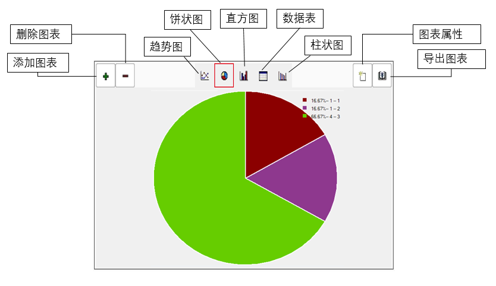
下面以饼状图为例。
图表的添加，点击，选择所需要添加的图表。
【注意】图表上限为20个，当图表个数超出窗口宽带则显示移动按钮，如图2；可添加或者删除的图表类型有五种，如图3；。
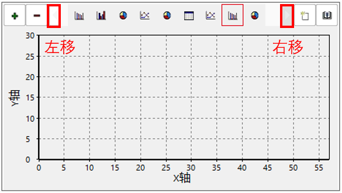
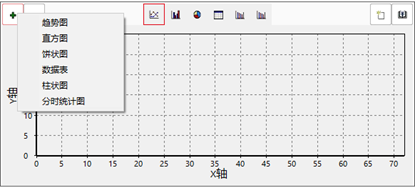
图表的删除
切换至需要删除的图表，点击，即可删除所选图表。例如要删除下图中的饼状图
1.如果添加了多个相同类型的图，点击删除按钮会删除当前显示的图表。
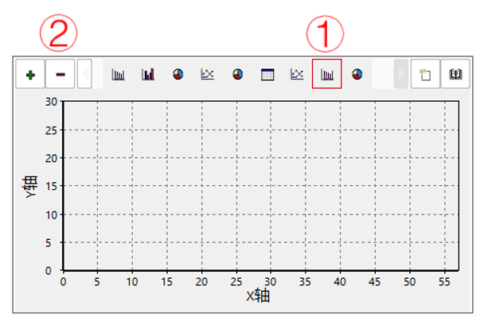
趋势图的属性设置
趋势图的属性设置如下图所示，主要包括Y轴信息的配置、数据基准线的配置和数据源配置三个功能。
数据源设置：数据表支持选择设置，数据列可同时勾选多个（最多勾选5个）。
基准线：主要用于直观观察所监视的数据是否超出预计范围，可最多添加9条基准线，每条基准线可以单独设置名称、值、颜色及显示状态。
X轴意义：到目前为止的运行次数
Y轴意义：监测项在当前运行次数时在数据库中保存的值。
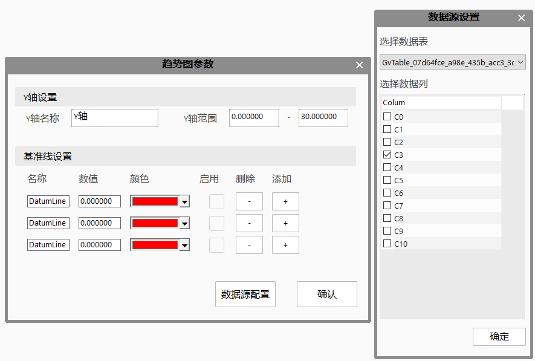
直方图的属性设置
直方图的属性设置如下图所示，主要包括对柱个数和数据源配置两个功能。
数据源设置：数据表支持选择设置，数据列可同时勾选多个（最多勾选62个）
基准线：用于直观观察被监测的数据是否超出预计范围，基准线最多可设置9条，每条基准线可单独设置名称、数值、颜色和显示状态。
X轴意义：数值上无意义，每个柱表示被选择的监测项。
Y轴意义：监测项在在数据库中保存的最新值。
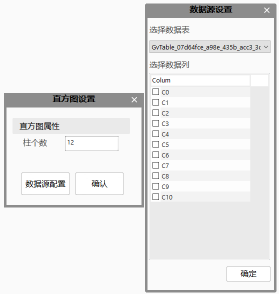
饼状图的属性设置
饼状图属性只支持对数据源选择的设置
描述信息可通过双击修改，描述信息可由英文、中文、数字和下划线组成，字符串长度最大为10，不可以为空。
饼状图支持的最大扇形区域数量为6，超出的类别均统计到”other”类别中。
数据表的属性设置
数据表属性设置如图所示，主要包括监测数据个数设置、数据实时统计分析项设置和数据源配置三个功能。
监视最新数据：监测项在数据库中的显示数据条数。
统计选项：每个监测项（每列数据）的统计学数据，可勾选多项，设置完成后运行一次工程会显示在数据表的最新数据下方。
CPK规格设置：过程能力指数，支持每个监测项单独设置规格上下限。
监视最新数据的统计方式为，监测项最新一个数据到设置的数据条数，包含最新数据。
统计选项中的统计学数据计算的是数据表中的数据，不是数据库中的所有数据的计算结果。
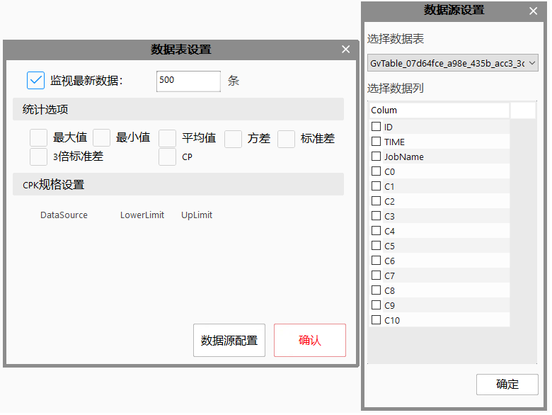
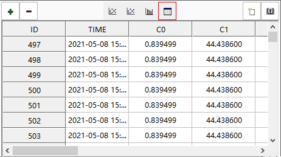
柱状图的属性设置
柱状图属性设置如下图所示，主要包括基准线设置和数据源配置，
柱状图属性：柱的个数支持修改。
基准线设置：用于直观观察被监测的数据是否超出预计范围，基准线最多可设置9条，每条基准线可单独设置名称、数值、颜色和显示状态。
X轴意义：数值上无意义，每个柱表示被选择的监测项。
Y轴意义：监测项在在数据库中保存的最新值。
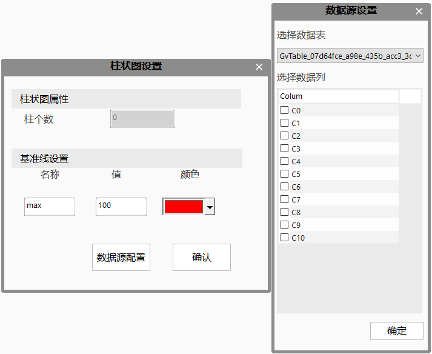
分时统计图
分时统计图属性设置如下图所示，主要包括数据回看、数据源配置和属性配置三部分功能。
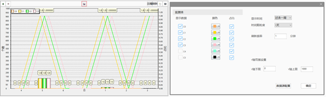
分时统计图属性设置如下图所示，主要包括数据回看、数据源配置和属性配置三部分功能。
数据源配置：数据库支持选择修改，监测项支持多选，最多可选择10个监测项。
显示时间：分时统计图显示的时间范围。
时间颗粒度：X轴相邻刻度之间的时间间隔。
刷新频率：分时统计图的刷新频率，最小值为1分钟，最大值为30分钟。
Y轴范围设置：Y轴上下限设置，最大值为10000，最小值为0.
显示数据：在分时统计图中显示的数据项，每个数据项支持修改颜色，支持多项显示，最多可选择5个数据项。
占比：数据项在每个时间段的占比连接成的折线。
刷新：手动刷新按钮，可在刷新时间未达到时刷新分时统计图。
数据回看：回看任意时间段内分时统计图的统计数据，显示的统计项与配置界面的显示数据勾选情况一致；数据回看界面为静态界面，不会随工程运行发生改变
| 显示时间 | 时间颗粒度 |
| 过去一年 | 3个月 |
| 1个月 | |
| 过去一个月 | 1周 |
| 1天 | |
| 过去一周 | 1天 |
| 8小时 | |
| 12小时 | |
| 过去一天 | 12小时 |
| 8小时 |
当时间颗粒度为小时，分时统计图的每个横坐标刻度显示的是“起始时刻-终止时刻”，即表示显示的时间范围。
数据源配置界面中选择的数据项会显示在配置界面，配置界面上需要勾选数据项后分时统计图才会显示。
显示时间的规则为在设置的时间颗粒度的情况下，当前时间处于的时间颗粒度区间为最新的时间刻度，根据最新刻度推算显示时间设置的时间段之前的时刻，根据时间颗粒度进行分割显示。例如显示时间设置为“过去一天”，时间颗粒度为“8小时”，当前时间为14时，此时14时处于“8-16”这个时间段内，最右侧时间刻度显示为“8-16”，刻度向左依次为“0-8”，“18-24”
最新的时间段内数据会实时进行更新，其他时间段的数据不会变化，当前时刻超过最新的时间段范围时，所有时间刻度将会左移并在最右侧创建新的时间刻度。
分时统计图最右侧刻度显示的数据为这个时间段起始时间到当前时间的数据；例如当前时间为14时30分，最右侧刻度为“14-15“，此时数据项的数据表示14时-14时30分的数据。
分时统计图的原理是将数据项在数据库中一段时间内的数据相加总和显示在图表中，所以数据项在数据库中的存储格式只能是1或0，即记录“OK”或者“NG”。
占比曲线的原理是计算数据项在数据库中一段时间内的数据相加总和与这段时间内数据总条数的比值，将不同时间段的占比连接成占比折线。
数据项的柱的颜色和数据项占比折线的颜色相同，当数据项被勾选显示时，勾选占比可以显示占比折线；当数据项未被勾选显示时，是否勾选占比均不会显示占比折线。
配置界面中时间颗粒度分为“1小时”、“1天”、“1周”和“1月”，如果终止时间与起始时间的差值小于等于24小时，时间颗粒度只能选择“1小时”；如果终止时间与起始时间的差值大于1天且小于等于7天，时间颗粒度只能选择“1天”；如果终止时间与起始时间的差值大于7天小于等于30天，时间颗粒度可以选择“1天”和“1周”；如果终止时间与起始时间的差值大于30天小于等于90天，时间颗粒度可以选择“1周”和“1月”；终止时间与起始时间的差值大于90天，时间颗粒度可以选择“1月”。
数据回看界面每次打开时上一次的结果不会保存，起始时间和终止时间均会恢复为当前时间。
数据回看进行设置时需要先设置时间后设置时间颗粒度，设置完成后点击数据回看按钮显示图表。数据回看界面不支持选择数据源，数据源情况与配置界面保持一致。
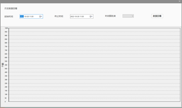
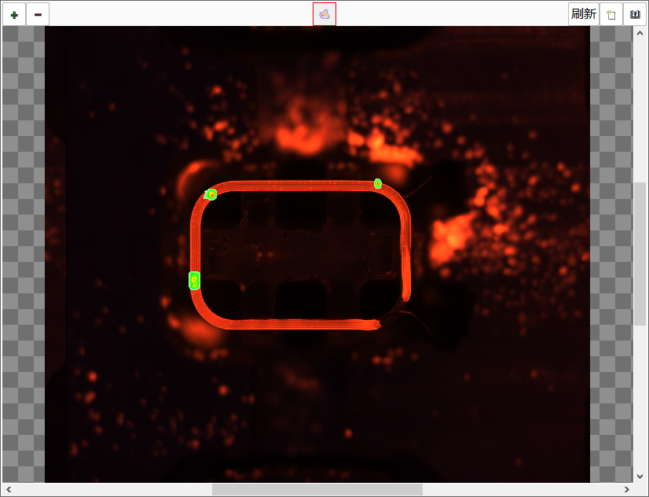
热力图属性设置如下图所示：
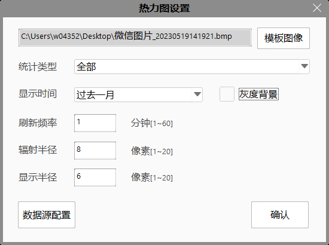
模板图像：用于统计缺陷的基准图像。
统计类型：创建的单个缺陷统计类型及全部缺陷。
显示时间：统计多少时间段内的数据，过去一天、过去一周、过去一月（一天是当天零点到24点）。
灰度背景：将模板图像变成灰度图片，方便显示缺陷。
刷新频率：自动刷新的时间，可设置[1~60]分钟。
辐射半径：控制热力图的集中程度[1~20]像素，默认8像素。
显示半径：控制热力图的点显示大小[1~20]像素，默认6像素。
数据源配置：点击数据源配置按钮，数据源配置如下图所示
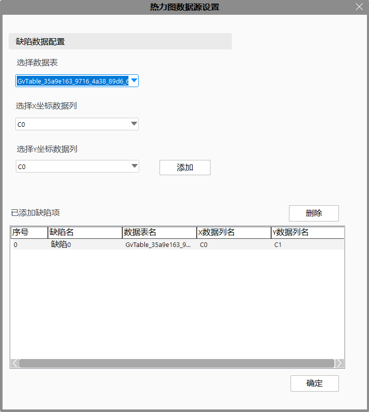
选择数据表：选择一个前面数据收集统计缺陷数据的表。
选择X坐标数据列：选择用来统计缺陷中心点的X坐标。
选择Y坐标数据列：选择用来统计缺陷中心点的Y坐标。
添加：将缺陷添加到统计类型表中。
删除：选择缺陷统计类型表中一条数据，点击删除。
缺陷数据修改：双击缺陷统计类型表的数据，缺陷数据修改如下图所示
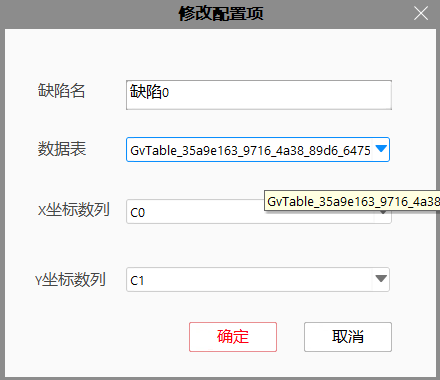
趋势图：
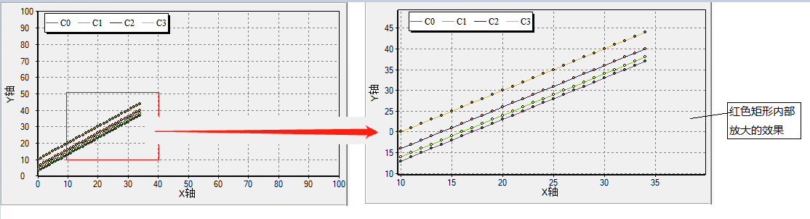
趋势图，直方图，饼状图，数据表，柱状图，分时统计图的导出。
选择好报表的保存路径，输入要保存的名称即可。
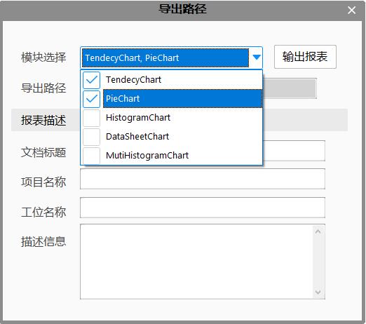
【注意】趋势图，直方图，饼状图会导出到同一个pdf文件里，数据表单独导出到同名的csv文件。